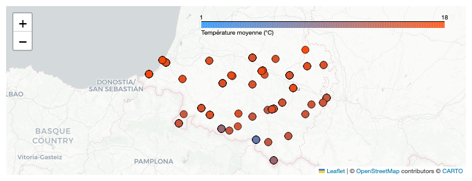
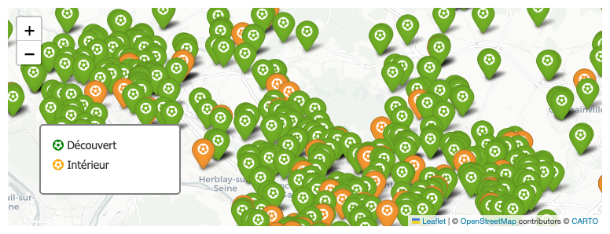

Notebook Reports Gallery
Cartographie de la Température Moyenne : Une Analyse Météorologique

Cartographie de la Température Moyenne des Postes Météo en France
Analyse des Équipements Sportifs dans le Val-d'Oise
Cartographie des Musées de France : Une Exploration Géographique
Cartographie des Musées de France : Une Analyse Géographique

Analyse Géo-Spatiale : À la recherche du terrain de football parfait dans le Val-d'Oise
Cartographie du Football dans le Val-d'Oise : Analyse et Visualisation des Terrains de Jeu
Analyse des températures maximales journalières : une plongée dans les données météorologiques françaises
Analyse des Températures Maximales Journalières et Anomalies Climatiques
Analyse des Températures Journalières et Anomalies Thermiques en France
Analyse des températures maximales journalières et anomalies thermiques
Analyse Comparative des Artistes de Rap : Complexité, Message et Vulgarité
Analyse Multidimensionnelle des Chansons de Rap : Complexité, Politique et Vulgarité
Analyse 3D des Chansons de Rap : Exploration de la Complexité Lexicale, du Message Politique et de la Vulgarité
Analyse 3D des Chansons de Rap : Une Exploration Temporelle et Artistique
Analyse de la Vulgarité Musicale : Évolution et Dispersion
Analyse de la Vulgarité Musicale : Évolution et Dispersion des Chansons
Analyse de l'Évolution de la Vulgarité dans les Chansons par Genre Musical
Analyse de l'Évolution de la Vulgarité dans les Chansons par Genre Musical
Dynamiques de mobilisations franciliennes üìà ‚Äì Explorer les validations de titres de transport au 2·µâ trimestre 2024
üìä Validations Transilien : d√©crypter la routine francilienne au 2·µâ trimestre 2024
üî• Carte des √©clairs rouges : les 10 000 positions o√π l'on conduit plus de 50 km/h au-dessus des limites
üî• Au-del√† de la tol√©rance : cartographier les exc√®s de vitesse extr√™mes en France
Analyse de la Consommation API : Suivi et Évolution des Indicateurs Clés
Suivi de la Consommation API : Analyse et Visualisation des Logs
Suivi de la Consommation API : Analyse de Logs pour une Meilleure Compréhension
Analyse des Tendances de Visites sur Différentes Plateformes
Selected Notebooks
Copy List